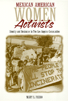

<body bgcolor="#FFFFFF" text="#000000" link="#0000FF" vlink="#CC0000" alink="#CC0000"><center><hr width="350" size="1" align="center" noshade>The story of Mexican American women in two communities who took control and made a difference<hr width="350" size="1" align="center" noshade><p><a href="https://cdcshoppingcart.uchicago.edu/Cart/ChicagoBook.aspx?ISBN=9781566395724&&PRESS=temple" target="_top">Buy this book!</a> | <a href="https://cdcshoppingcart.uchicago.edu/Cart/Cart.aspx?PRESS=temple" target="_top">View Cart</a> | <a href="https://cdcshoppingcart.uchicago.edu/Cart/Cart.aspx?PRESS=temple" target="_top">Check Out</a></p><p></p></center><!--none//--><h1>Mexican American Women Activists</h1>
<H2>Identity and Resistance in Two Los Angeles Communities</H2>
<h3>Mary Pardo</h3>
<P>cloth 1-56639-572-0 $74.50, Jun 98, <FONT COLOR=#990033>Out of Stock Unavailable</FONT>
<br>paper 1-56639-573-9 $31.95, Jun 98, <FONT COLOR=#990033>Available</FONT>
<BR> 322 pp
5.5x8.25
1&nbsp;map(s) 1&nbsp;figure 12&nbsp;halftones
</P><h3 align="center"><P><font color="#996633">Honorable Mention for Outstanding Books Awards, Gustavus Myers Center for the Study of Bigotry and Human Rights in North America,
1999</font></P>
</H3>
<p>When we see children playing in a supervised playground or hear about a school being renovated, we seldom wonder about who mobilized the community resources to rebuild the school or staff the park. <i>Mexican American Women Activists</i> tells the stories of Mexican American women from two Los Angeles neighborhoods and how they transformed the everyday problems they confronted into political concerns. By placing these women's experiences at the center of her discussion of grassroots political activism, Mary Pardo illuminates the gender, race, and class character of community networking. She shows how citizens help to shape their local environment by creating resources for churches, schools, and community services and generates new questions and answers about collective action and the transformation of social networks into political networks.
<p>By focusing on women in two contiguous but very different communities&#151the working-class, inner-city neighborhood of Boyle Heights in Eastside Los Angeles and the racially mixed middle-class suburb of Monterey Park&#151Pardo is able to bring class as well as gender and ethnic concerns to bear on her analysis in ways that shed light on the complexity of mobilizing for urban change.
<p>Unlike many studies, the stories told here focus on women's strengths rather than on their problems. We follow the process by which these women empowered themselves by using their own definitions of social justice and their own convictions about the importance of traditional roles. Rather than becoming political participants in spite of their family responsibilities, women in both neighborhoods seem to have been more powerful because they had responsibilities, social networks, and daily routines separate from the men in their communities.
<p>Pardo asserts that the decline of real wages and the growing income gap means that unfortunately most women will no longer be able to focus their energies on unpaid community work. She reflects on the consequences of this change for women's political involvement, as well as on the politics of writing about women and politics.
<BR>&nbsp;<h2>Excerpt</h2><P>Excerpt available at <a href="http://www.temple.edu/tempress">www.temple.edu/tempress</a></p>
<BR>&nbsp;<h2>Reviews</h2>
<p><i>"This book makes for fascinating reading and could be used as a resource in many different undergraduate courses."</i>
<br>&#151<b><i>Contemporary Sociology</i></b>
<p><i>"... makes important contributions to the study of gendered politics... Pardo conveys the way new strategies and tactics rooted in the experiences of working class communities of color can redefine both our understandings of social identities as well as the meaning of political citizenship."</i>
<br>&#151<b><i>The American Political Science Review</i></b>
<p><i>"...builds a compelling argument for the centrality of both gender and ethnic identity in the political activism and community resistance of Mexican-American women in two very different communities of Los Angeles.... A strong two-case study with numerous quotes allows the activists to tell their story in their own words while the analytical conclusion ties in the main themes of the book in a very useful way. This is a good book to use in Women's Studies and Ethnic Studies courses, and especially for Community Studies courses focused on the intersection of race, class, and gender."</i>
<br>&#151<b><i>Journal of Ethnic and Migration Studies</i></b>
<BR>&nbsp;<h2>Contents</h2><P>
<p>Acknowledgments
<br>1. Introduction: Putting Women at the Center of Politics
<br>2. Community Contexts and Controversies: The Barrio and the Suburb
<br>3. The Politics of Community Identity in Eastside Los Angeles: "We Got Everything Nobody Else Wanted"
<br>4. The Politics of Community Identity in Monterey Park: "Things Looked Better over There"
<br>5. Becoming an Activist in Eastside Los Angeles: "For My Kids, for My Community, for My 'Raza'"
<br>6. Becoming an Activist in Monterey Park: "The Elementary School Kids Are Still Too Young to Defend Themselves"
<br>7. Creating Community in Eastside Los Angeles: "We Have to Do It!"
<br>8. Creating Community in Monterey Park: "Keeping an Eye on the Block"
<br>9. Women Transforming the "Political": "Traditions Are Not So Traditional"
<br>Appendix: Concepts and Terms
<br>Notes
<br>References
<br>Index
</P><BR>&nbsp;<H2>About the Author(s)</H2>
<P><b>Mary Pardo</b> is Professor of Chicana/o Studies at California State University, Northridge. She is the author of several articles on women and grassroots organizing and has been active in the Chicano Movement in Los Angeles for about twenty-five years.</P>
<BR><H2>Subject Categories</H2>
<p><A HREF="/tempress/women.html" TARGET="_top">Women's Studies</a>
<BR><A HREF="/tempress/latino.html" TARGET="_top">Latino/a Studies</a>
<BR><A HREF="/tempress/urban.html" TARGET="_top">Urban Studies</a>
</p>
<p align="center"><a href="https://cdcshoppingcart.uchicago.edu/Cart/ChicagoBook.aspx?ISBN=9781566395724&&PRESS=temple" target="_top">Buy this book!</a> | <a href="https://cdcshoppingcart.uchicago.edu/Cart/Cart.aspx?PRESS=temple" target="_top">View Cart</a> | <a href="https://cdcshoppingcart.uchicago.edu/Cart/Cart.aspx?PRESS=temple" target="_top">Check Out</a></p><p><font face="Arial" size="1"><a href="copyright.html" onMouseOver="window.status='Web Copyright Policy';return true;" onMouseOut="window.status=''" title="Web Copyright Policy">&copy;</a> 2015 <a href="http://www.temple.edu" target="new" onMouseOver="window.status='Link to Temple University home page';return true;" onMouseOut="window.status=''" title="Link to Temple University home page">Temple University</a>. All Rights Reserved. http://www.temple.edu/tempress/titles/1115_reg.html</font></p>